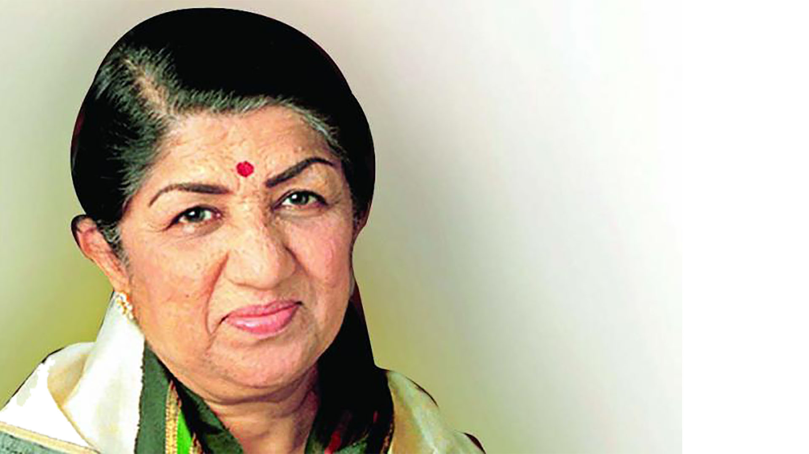

1929-2022
One has to be fully committed to one's career. Otherwise, there's no point.
Lata Mangeshkar, born on September 28, 1929, in Indore, India, is a legendary playback singer in the Indian film industry. With a career spanning over seven decades, she is renowned for her versatile and emotive voice, having sung thousands of songs in various languages. Her contributions to music have earned her accolades, including the prestigious Bharat Ratna, and she remains an iconic figure in Indian cultural history.